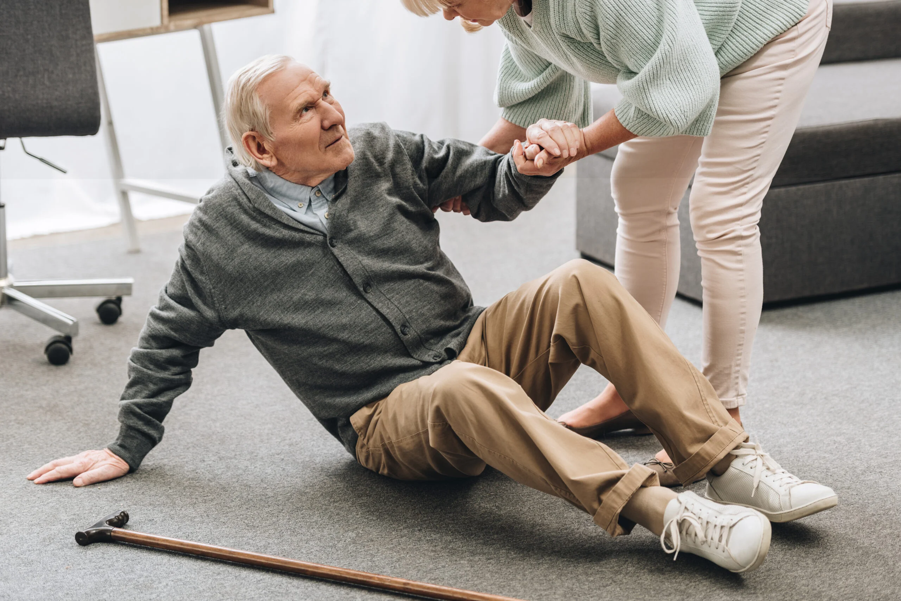
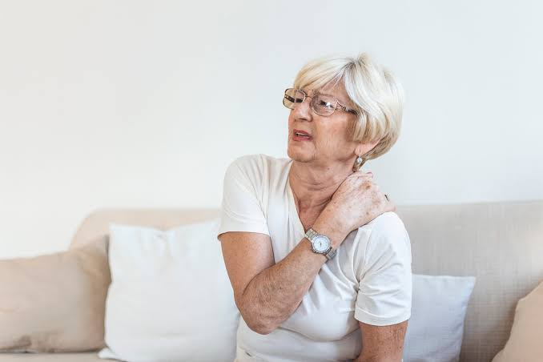
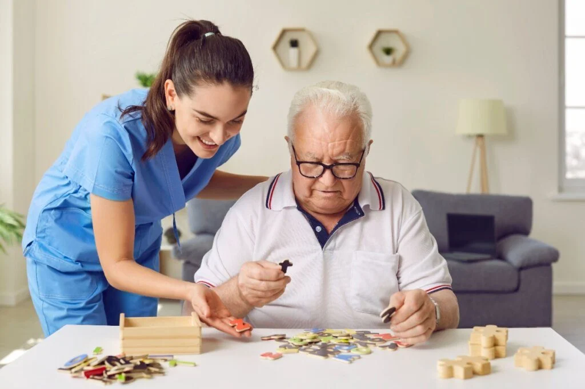

Geriatria & Clínica Médica
Geriatria & Clínica Médica
Dr. Roberto Vasconcelos
CRM-RJ 52.84910-2Mais de 18 anos de experiência em longevidade ativa, controle de doenças crônicas e acompanhamento domiciliar humanizado.
Agendar com Dr. RobertoAgende sua consulta de forma rápida, humanizada e prática para garantir mais vitalidade e longevidade.
Nossa estrutura é preparada para oferecer acompanhamento humanizado, seguro e focado na longevidade com qualidade de vida.

Avaliação postural, fortalecimento muscular e orientação para adaptação da casa a fim de evitar acidentes domésticos e preservar a autonomia.
Saiba mais ›
Diagnóstico precoce, acompanhamento de densidade óssea e tratamentos específicos para redução do risco de fraturas em idosos.
Saiba mais ›Exames periódicos e acompanhamento global focado no controle de hipertensão, diabetes, coração e saúde metabólica geral.
Saiba mais ›
Exercícios lúdicos e acompanhamento neurológico preventivo para preservação da memória, do raciocínio e prevenção do declínio cognitivo.
Saiba mais ›Profissionais experientes e dedicados ao atendimento acolhedor no Rio de Janeiro, em consultório ou no conforto do seu lar.
Geriatria & Clínica Médica
Mais de 18 anos de experiência em longevidade ativa, controle de doenças crônicas e acompanhamento domiciliar humanizado.
Agendar com Dr. Roberto Fisioterapia & Reabilitação
Fisioterapia & Reabilitação
Especialista em prevenção de quedas, equilíbrio postural, fortalecimento muscular e recuperação pós-operatória na terceira idade.
Agendar com Dra. Helena Neuropsicologia & Memória
Neuropsicologia & Memória
Focada em estimulação cognitiva preventiva, avaliação neuropsicológica e suporte emocional integrado aos pacientes e familiares.
Agendar com Dra. Camila RezendeEscolha a cobertura ideal para você ou para os seus pais. Sem carência e sem burocracia.
Ideal para acompanhamento de rotina preventivo.
Proteção completa e suporte de saúde contínuo.
Atendimento domiciliar VIP e equipe multidisciplinar.
Veja o relato de pacientes e familiares que transformaram sua rotina de saúde conosco.
"Consegui agendar o check-up completo do meu pai em menos de 2 minutos. O médico foi super paciente, explicou cada exame com calma e ajustou a medicação dele."
"Depois que comecei a fisioterapia de prevenção de quedas pela Idade+, recuperei minha segurança para caminhar na praia e subir escadas sem medo."
"A telemedicina 24h já nos salvou em um domingo à noite quando minha mãe teve um pico de pressão. Atendimento imediato e muito humano."
Tire suas dúvidas mais comuns sobre o atendimento geriátrico e o funcionamento dos nossos serviços.
Nossas consultas têm duração estendida (mínimo de 50 minutos) para permitir escuta atenta, avaliação minuciosa dos remédios em uso e acolhimento dos familiares.
Sim! Para pacientes com dificuldade de locomoção, disponibilizamos visitas médicas e fisioterapêuticas no conforto do lar através do Plano Família ou agendamento avulso.
Trabalhamos no modelo particular com emissão de nota fiscal para reembolso integral ou parcial junto ao seu convênio médico.
Assinantes têm acesso ao suporte 24h pelo telefone ou pelo WhatsApp, com orientação médica imediata e encaminhamento quando necessário.
Preencha os campos abaixo e entraremos em contato rapidamente.